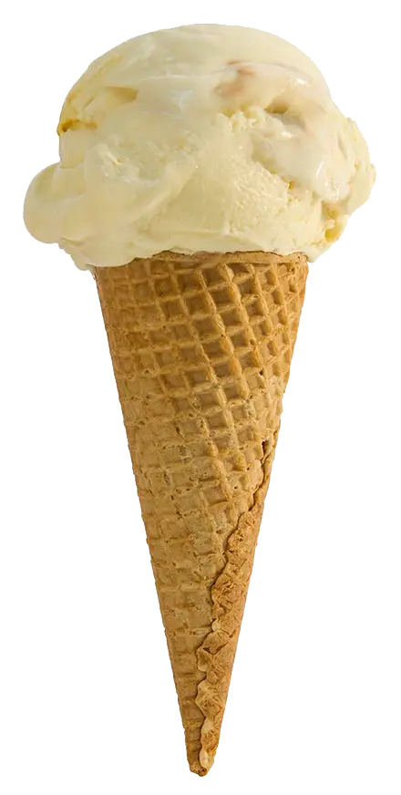
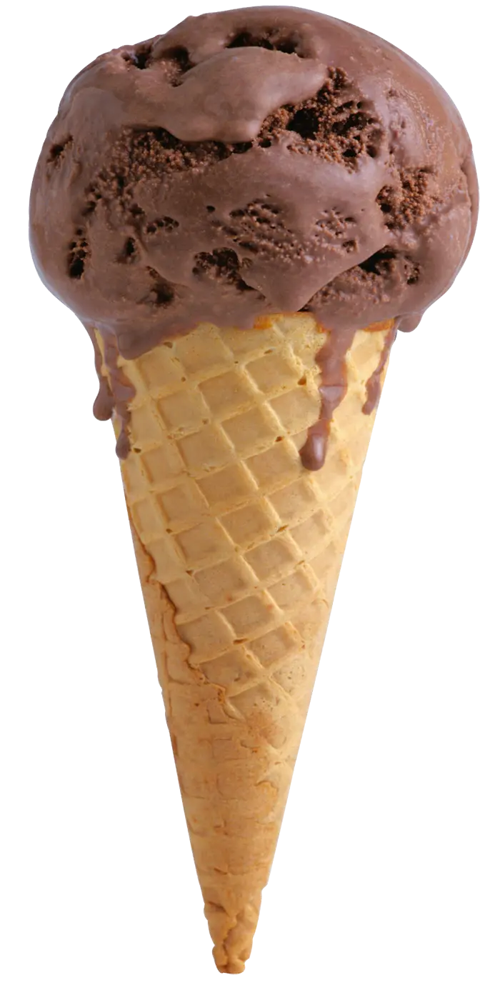
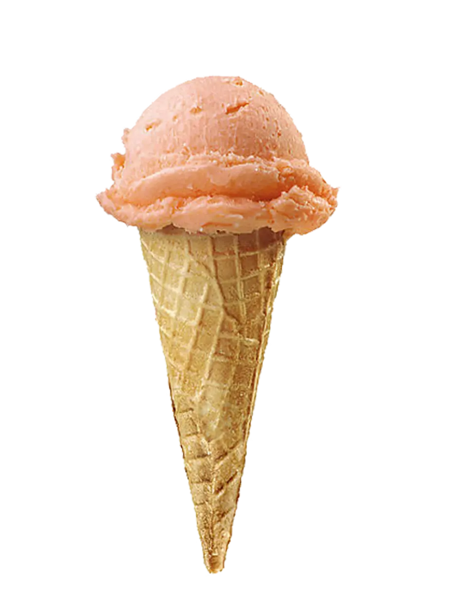
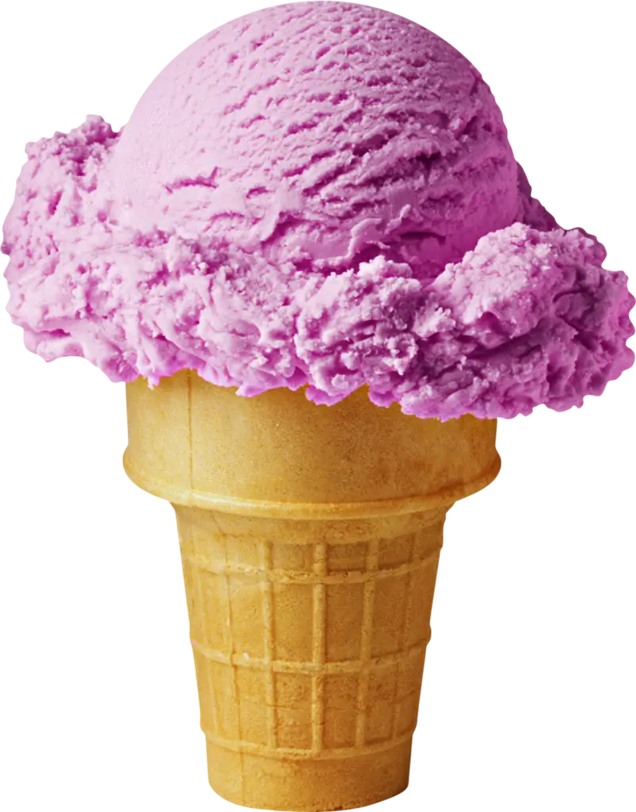
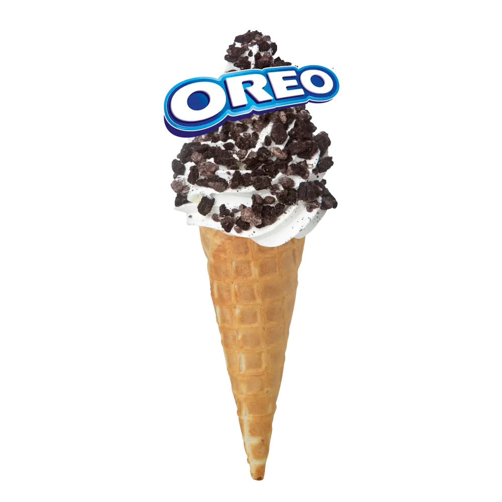
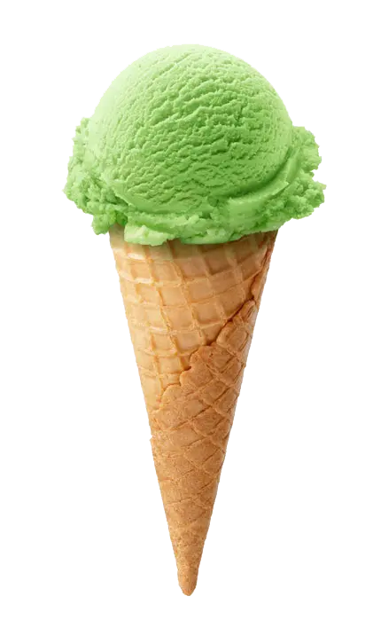

Sade (Süt & Salep)
Gerçek keçi sütü ve doğal salep uyumu. Klasikten vazgeçemeyenlere özel yoğun kıvam.
İnceleYılların ustalığı, en taze günlük keçi sütü, doğal salep ve gerçek meyvelerle buluştu. Katkısız lezzetleri keşfetmeye hazır mısınız?
Dondurmamızın sırrı, yerel çiftliklerden her sabah taze sağım olarak gelen organik keçi sütüdür.
Suni aroma ve şurup kullanmıyoruz. Renkleri ve tatları sadece mevsimin en iyi meyvelerinden alıyoruz.
Kıvam artırıcı kimyasallar değil, Toroslar'dan özenle toplanan gerçek, saf salep kullanıyoruz.
Her damağa hitap eden, doğal malzemelerle ustalıkla hazırlanmış çeşitlerimiz.

Gerçek keçi sütü ve doğal salep uyumu. Klasikten vazgeçemeyenlere özel yoğun kıvam.
İncele
Enfes Belçika çikolatası ve taze sütün yoğun kıvamlı buluşması. Gerçek kakao çekirdeklerinden.
İncele
Mevsiminde toplanmış taptaze, sulu çileklerden gelen pembe rüya. Renklendirici içermez.
İncele
Doğal Ege incirlerinin nefis dokusu ve ceviz, her kaşıkta çıtır çıtır bir lezzet şöleni.
İncele
Bol çıtır bisküvi parçacıklarının sütlü dondurma ile karşı konulmaz uyumu. Çocukların favorisi.
İncele
Hafif mayhoş, ferahlatıcı ve taptaze kivi dilimleriyle yaz aylarının vazgeçilmezi.
İnceleHayır, Uğur Usta Dondurma olarak ürünlerimizde kesinlikle glikoz şurubu, suni tatlandırıcı veya renklendirici kullanmıyoruz. Sadece %100 pancar şekeri tercih ediyoruz.
Evet, meyveli (sorbe) ve sade sütlü dondurmalarımız tamamen glutensizdir. Bisküvili (Oreo vb.) çeşitlerimiz hariç güvenle tüketebilirsiniz.
Düğün, nişan, doğum günü gibi özel etkinlikleriniz için Kocaeli içi özel soğutuculu araçlarımızla kilo ile dondurma siparişi almaktayız. Detaylar için iletişime geçebilirsiniz.
Kavun, Karadut, Limon, Karamel, Antep Fıstığı ve daha onlarca efsanevi lezzet vitrinimizde sizi bekliyor. Uğur Usta'nın tezgahındaki tüm renkleri denemek için dükkanımıza davetlisiniz.
Yol Tarifi Al1990'lardan bu yana süregelen dondurmacılık geleneğimizle, dededen toruna aktarılan gizli tariflerimizi modern ve hijyenik tesislerimizde üretiyoruz. Amacımız, çocukluğunuzda yediğiniz o gerçek ve katkısız dondurma lezzetini yeni nesillere de tattırmaktır.

Lezzet dolu vitrinimizi görmek ve dondurmalarımızı tatmak için mağazamıza bekliyoruz.